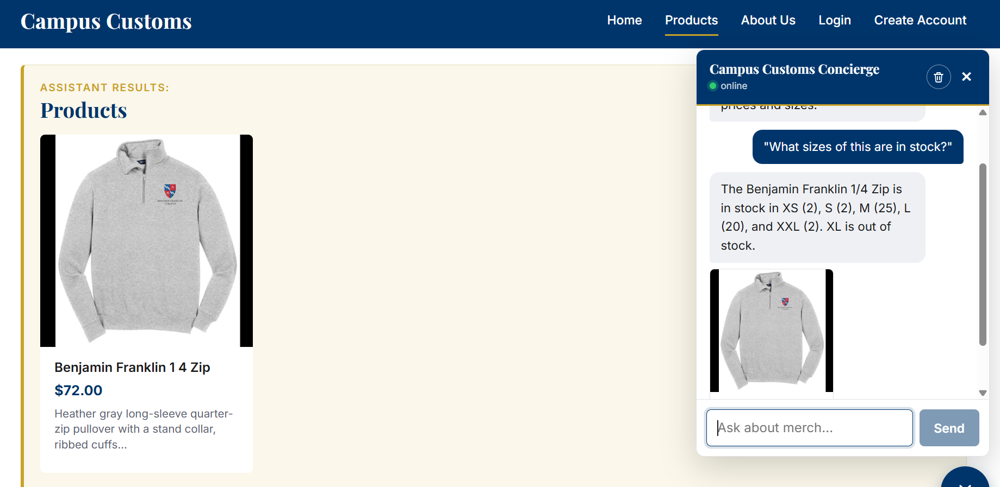
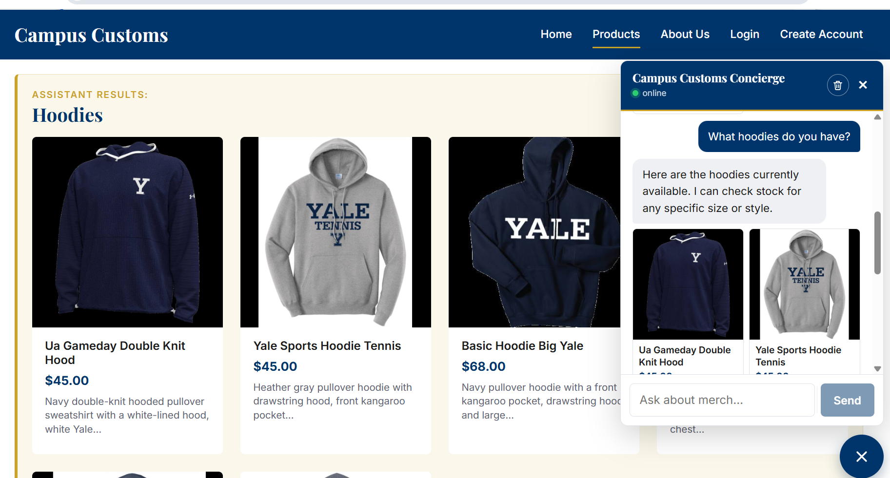
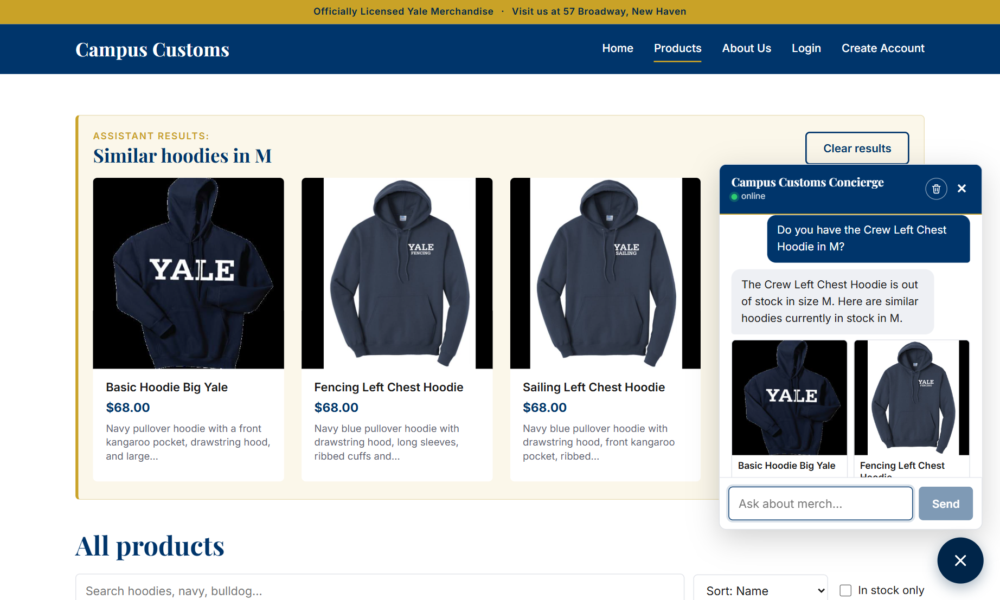
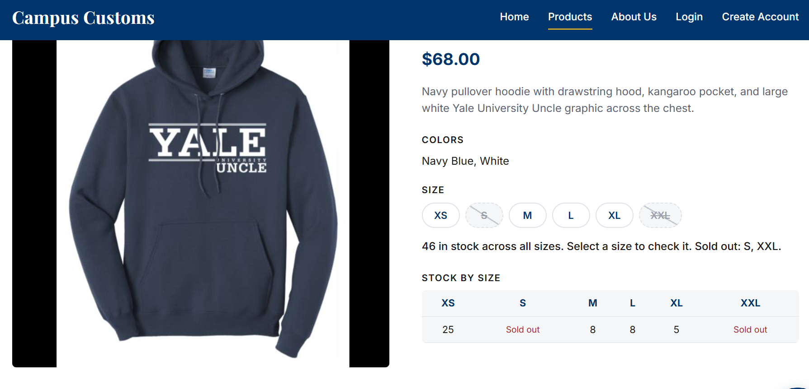

Campus Customs: App Check
These are screenshots from the running local site (http://localhost:5173 with the FastAPI backend on port 8000).
1. Chat checks live inventory

On the Benjamin Franklin 1/4 Zip page, the agent answered stock by size (XS 2, S 2, M 25, L 20, XXL 2) and said clearly that XL is out of stock. It got this from the database through its tools, not from memory.
2. Chat search updates the page

Asking "What hoodies do you have?" made matching hoodie cards appear on the page under "Assistant results: Hoodies", with real prices from the database. Each card opens its product detail page.
3. Usability improvement: in-stock alternatives (Problem 9)

When a size is sold out, the agent calls find_alternatives and suggests similar in-stock products
as cards. This turns a dead end into a sale. The quick-question chips and the price-accuracy guard are described
in usability.md.
4. Product page stock clarity

The product page shows stock by size from the database. Sold-out sizes (S, XXL) are crossed out and can't be selected.